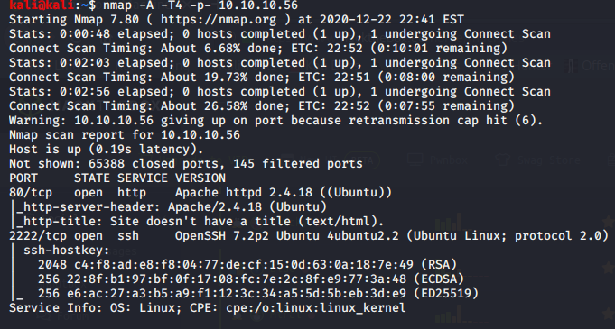

nmap scan done



searched cgi-bin for more files now with vaious extensons like .sh,.php,.txt,.py and so on

The HTTP 200 OK success status response code indicates that the request has succeeded. A 200 response is cacheable by default.
Advantech Switch - 'Shellshock' Bash Environment Variable Command Injection (Metasploit) | cgi/remote/38849.rb
Apache mod_cgi - 'Shellshock' Remote Command Injection | linux/remote/34900.py
these seem most appropporiate

this thus worked

Now you can observe the highlighted text is showing that the user shelly can run the Perl language program or script as a root user. Therefore we got root access by executing Perl one-liner